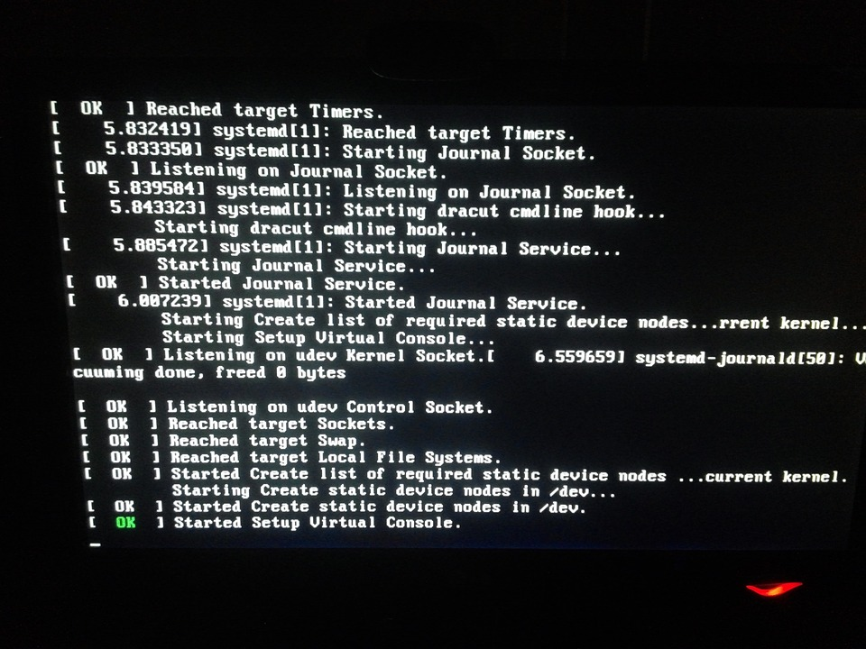

Welcome
Connecting Linux enthusiasts from around Oxford County.
About Us
We are a community of Linux users who share knowledge and support each other. Whether you are a beginner or an expert, you are welcome to join us.
Linux is an open-source operating system kernel that has revolutionized the world of computing since its inception in 1991 by Linus Torvalds. Built on the principles of collaboration and transparency, Linux has grown to power everything from personal computers and servers to smartphones and embedded systems. Its modular architecture and robust security features make it an ideal choice for developers and enterprises alike. One of the key advantages of Linux is its flexibility; users can tailor it to their specific needs by selecting from various distributions like Arch, Fedora, and Debian, each catering to different user requirements and preferences.

Open-source software (OSS) is software that is freely available for anyone to use, modify, and distribute. This model fosters a collaborative environment where developers from around the world can contribute to projects, improve code quality, and innovate rapidly. The open-source movement has given rise to a plethora of successful projects, such as the Apache web server, the Firefox web browser, and the LibreOffice suite. OSS promotes transparency and trust, as the source code is available for review and audit by anyone. This approach not only enhances security by allowing vulnerabilities to be quickly identified and patched but also drives technological advancement by enabling a diverse community of contributors to share their expertise and creativity.
Upcoming Events
- Monthly Meetup - first Thursday of the month at the library
- Linux Workshop - TBD